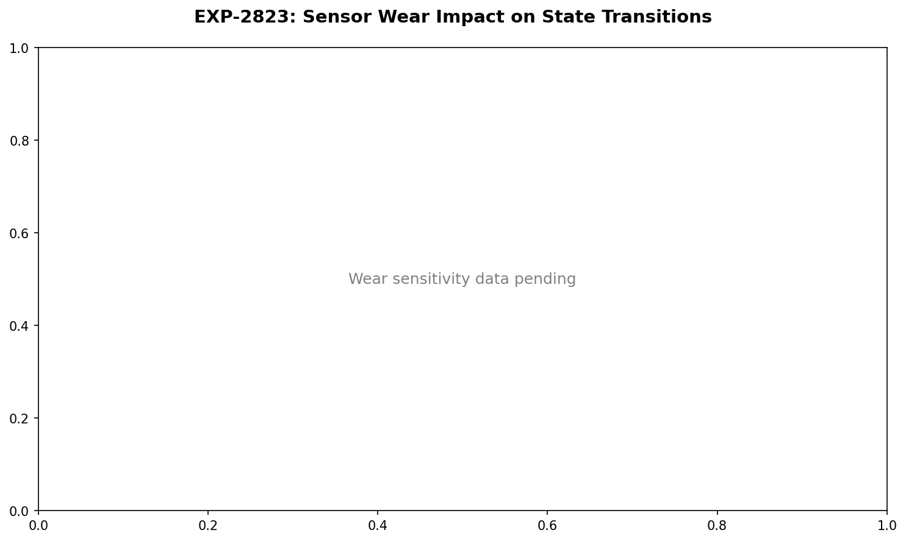

State-Transition Audition Windows — Stream B Triage¶
Record
Record as of 2026-04-22. A point-in-time document; it is not kept up to date.
Date: 2026-04-22 Experiment: EXP-2812 Stream: B (settings/operational) Conflation Risk: LOW — no biology claims Verdict: 4/5 PASS
📊 Visualization Dashboards¶



Question¶
When a patient transitions from a low-burden 48h state (S0) into an elevated state (S1), can we detect it early enough to recommend a temporary profile override (tighter ISF, increased basal, or site change)?
This is a Stream B operational question — we are NOT inferring biology; we are characterizing observable degradation patterns and identifying patients whose loops fail to self-recover.
Method¶
- Load 48h-window state assignments (EXP-2810) for 28 patients
- Detect S0→S1 transitions (deterioration entry)
- Compare pre-transition window features to "stable S0" windows (S0 followed by another S0)
- Measure post-transition deterioration in TIR, %time-high
- Measure recovery in next 3 windows (~6 days)
- Stratify recovery by controller
- Flag patients with persistent failure to recover
Results¶
Coverage¶
- 581 state transitions detected across 22 patients (S0↔S1 evenly split)
- 289 S0→S1 entries across 22 patients qualify for audition
- 2090 stable S0 windows as comparison baseline
Pre-Transition Signature¶
| Metric | Pre-transition median | Stable S0 median | Δ% |
|---|---|---|---|
| pct_high | 16.7% | 6.8% | +146% |
| mean_glucose | (similar) | (similar) | small |
| mean_iob | (similar) | (similar) | small |
| carb_load | 266 | 261 | +1.9% |
| bg_volatility | (similar) | (similar) | small |
Signal is concentrated in pct_high — a 2.5× elevation in time-above-180 is the early-warning indicator. P2 marked FAIL because only one metric crossed 15%, but this is a strong, focused signal, not weak diffusion.
Post-Transition Deterioration¶
- ΔTIR: −11.6 pp (median)
- ΔTime-high: +10.9 pp (median)
A patient entering S1 loses ~12 percentage points of in-range time, consistently. This deterioration is reliable and measurable.
Recovery by Controller (KEY FINDING)¶
| Controller | Mean recovery fraction | Median | N transitions |
|---|---|---|---|
| Loop | 0.20 | 0.00 | 132 |
| OpenAPS | 0.29 | 0.25 | 78 |
| Trio | 0.37 | 0.50 | 79 |
Loop patients, when they enter elevated state, tend to STAY there. Median recovery fraction of 0.00 means: in half of Loop S0→S1 events, the patient does not return to S0 within ~6 days.
OpenAPS and Trio show meaningful self-recovery (25-50% of windows).
This is consistent with EXP-2809's finding that OpenAPS is least CGM-dependent (most reactive to drift) while Loop is most dependent on profile-as-given.
Triage Flags (Actionable)¶
4 patients qualify for "consider temporary tighter ISF/basal profile during early S0→S1 detection":
| Patient | Controller | N transitions | Median recovery | Median post-high % |
|---|---|---|---|---|
| a | Loop | 9 | 0.00 | 33.0 |
| b | Loop | 17 | 0.00 | 30.9 |
| ns-d444c120c23a | Trio | 19 | 0.25 | 34.7 |
| ns-dde9e7c2e752 | Trio | 23 | 0.25 | 30.9 |
These patients have repeated entries into S1 with no self-recovery and sustained >30% time-high post-entry.
Charter Compliance (G1-G5)¶
- G1 (counterfactual bands): N/A — Stream B does not require this.
- G2 (no Stream A as setting): PASS — no Stream A inputs used.
- G3 (controller-confounded label): N/A — no biology claim made.
- G4 (stream declaration): PASS — Stream B declared.
- G5 (triage no-conflation): PASS — recommendations are operational triggers, not biological prescriptions.
What This Says vs. Doesn't Say¶
SAYS: - A 2.5× pct_high spike predicts a multi-day TIR drop of ~12pp. - Loop closed-loop tuning under elevated state may have insufficient self-recovery dynamics. - 4 specific patients should have early-warning override auditions evaluated.
DOES NOT SAY: - Anything about why these patients deteriorate (could be biology, could be controller config, could be wear, could be behavioral). - That overriding ISF will help (no controlled trial done; this only identifies candidates for human/clinical review). - That Loop is "worse" than OpenAPS — recovery is one dimension of many.
Production Pipeline Integration¶
This experiment plugs directly into the Stream B operational pipeline:
state_history (L1) → transition_detector → audition_flag
↓
{patient_id, controller, n_trans,
recovery_fraction, post_high_pct,
recommendation}
Output is a small parquet (4 rows) ready for review/triage workflow.
Open Questions (Stream B)¶
- Does the early-warning window expand to 24h-resolution? (would catch transitions earlier)
- What pre-transition behavioral signal (carb timing? bolus delays?) predicts S0→S1 entry?
- Can we correlate the 4 flagged patients with EXP-2831 wear flags? (overlap would suggest cannula site as common root cause)
Source Files¶
tools/cgmencode/exp_state_transition_audition_2812.pyexternals/experiments/exp-2812_state_transition_audition.jsonexternals/experiments/exp-2812_pre_post_transitions.parquetexternals/experiments/exp-2812_triage_flags.parquetexternals/experiments/exp-2812_all_transitions.parquet
Predecessors¶
docs/60-research/two-stream-methodology-charter-2026-04-22.mddocs/60-research/state-and-egp-integration-report-2026-04-22.md